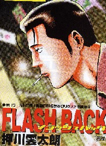

Book review 書壇。
（４８）FlashBack
麻雀コミックと云っても、大雑把にシリアス系とギャグ系に別れる。シリアス系とギャグ系の境界はハッキリしていないが、σ(-_-)の中ではむこうぶちとか天打天使などがシリアス系、スーパーズカンとか根こそぎフランケンなどがギャグ系という認識。
どちらの系統にも面白い作品はあるが、どちらか云えば、ギャグ系の方が好き。その割には、ここ数年、コミック大賞にはシリアス系を選出しているけど、それはたまたまの結果。
でそんなギャグ系の中に、今回、近麻オリジナルに登場したのが、押川雲太郎のFlash Back。

第１話からむちゃ面白い。
主人公がバカ付きの連続という根こそぎフランケンも傑作だったが、その次のダイナマイトダンデイはさらに面白かった。このFlash Backは、第１話からダイナマイトダンデイに匹敵する面白さ。このまま行ってくれれば、間違いなくコミック大賞候補。大いに、楽しみにしている。
PS：「このまま行ってくれれば、間違いなくコミック大賞候補」って書いたのに、前編後編２回で終了してしまった。あらまぁ....。